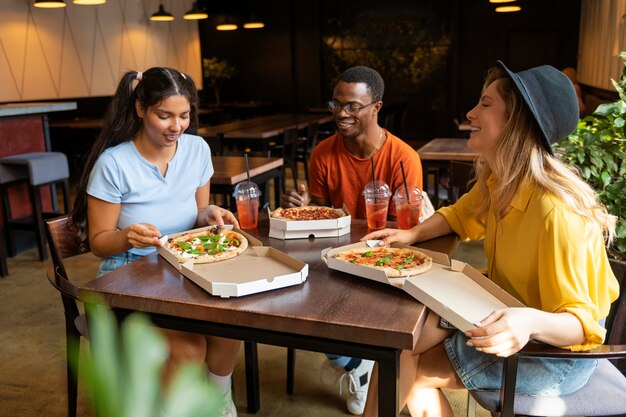
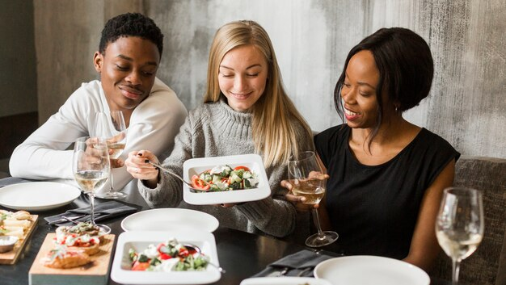

O Melhor Baião de Dois!
Sabor e tempero como você nunca viu!
Sobre Nós
O Restaurante Tia'Manda é o lugar ideal para quem busca o verdadeiro sabor da nossa região.
Com receitas caseiras e um tempero inigualável, nossa missão é proporcionar uma experiência gastronômica que faça você se sentir em casa.
Venha conhecer o nosso famoso Baião de Dois e outros pratos que trazem o melhor da culinária local!
Galeria


Contato e Localização
Endereço: Rua Exemplo, 123, Cidade - Estado
Telefone: (11) 91234-5678